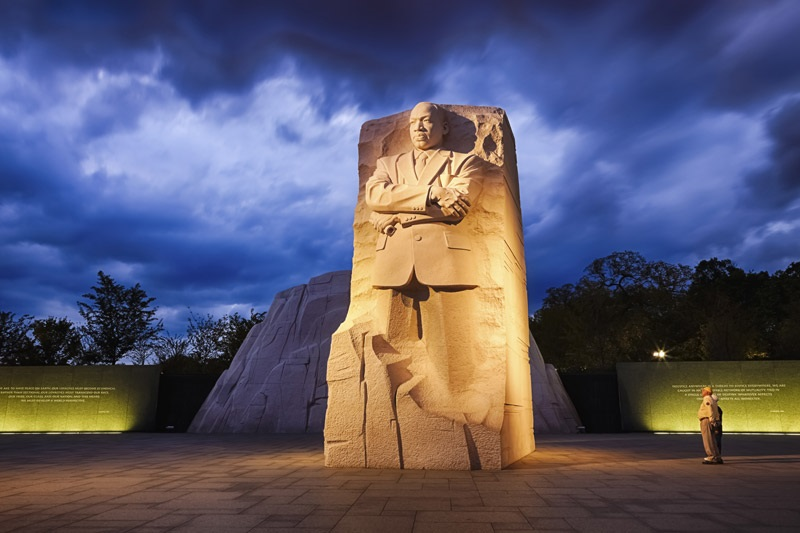

A few of MY favorite things ...
- "Raindrops on roses and whiskers on kittens
- Bright copper kettles and warm woolen mittens
- Brown paper packages tied up with strings
- These are a few of my favorite things ..."
credit: Rodgers and Hammerstein, The Sound of Music
And these are a few of MY absolutely favorite things!
